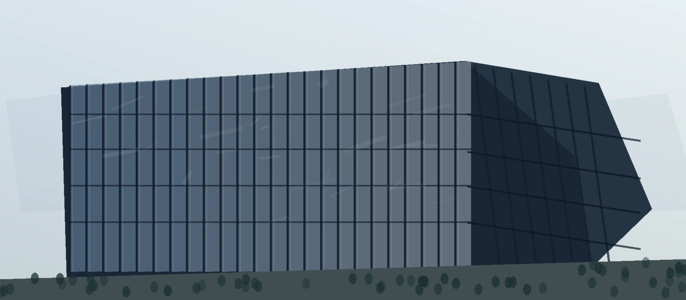

Довіра
Прозорі принципи роботи, надійність і безпечна взаємодія.
Ми віримо, що найкращі технології не віддаляють людей від світу — вони розширюють їхні можливості.

Ми проєктуємо роботів, які органічно працюють поруч із людиною. Наша мета — створити технології, що справді розширюють можливості.
Синтез технологій, інженерії та дизайну — основа нашого бачення робототехніки. Ми створюємо концептуальні системи, які можна зрозуміти, яким можна довіряти та які допомагають робити більше.
Прозорі принципи роботи, надійність і безпечна взаємодія.
Уважність до деталей корпусу, приводів та програмного забезпечення.
Технології з урахуванням реальних потреб людей та організацій.
SYNAPSE Robotics — вигадана компанія, а цей сайт є демонстраційним дизайн-проєктом. Усі наведені показники, новини та характеристики моделей є концептуальними, а не підтвердженими характеристиками реальних продуктів.
Є питання, ідея співпраці чи сценарій застосування роботів? Розпочніть діалог із нашою командою.